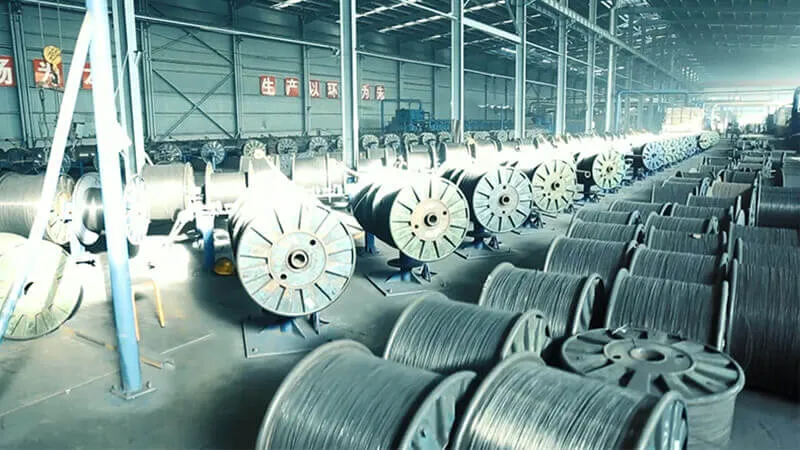
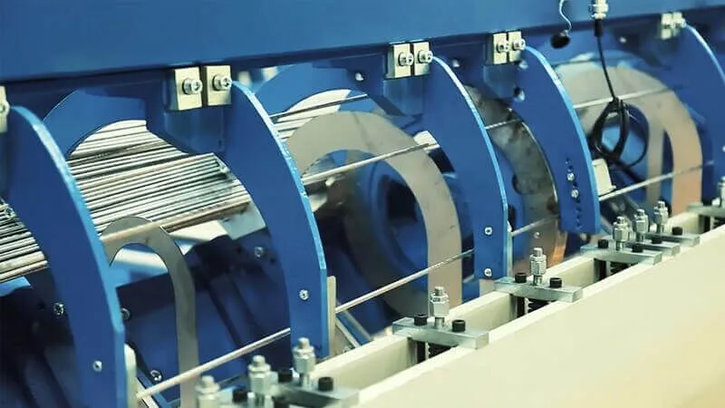
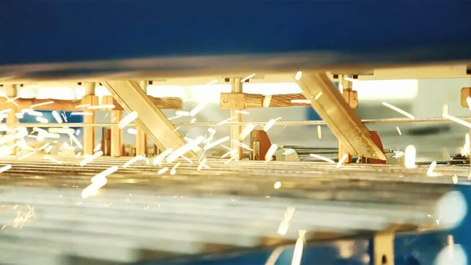
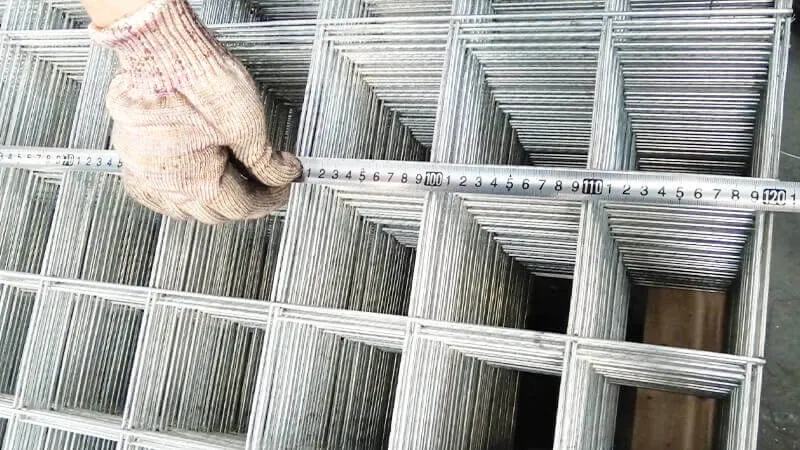

Introduction
In modern construction, industrial manufacturing, and architectural design, metal mesh products have become indispensable materials due to their high strength, durability, and versatility. Among these materials, stainless steel welded wire mesh stands out for its reliability and wide range of applications. From standard stainless steel welded mesh panels to specialized 316 stainless steel welded mesh, these products are carefully designed to meet the stringent performance requirements of various industries.
Whether you work in construction, agriculture, filtration, or security systems, understanding the characteristics and applications of stainless steel welded wire mesh and its related products is essential. This article explores its manufacturing process, advantages, and key selection criteria to help you make informed decisions.

Manufacturing Process and Material Composition
The quality and performance of stainless steel welded wire mesh begins with the selection of raw materials and the precision of the manufacturing process. Typically, stainless steel wire is made from alloys containing chromium and nickel, which provide corrosion resistance and mechanical strength. For high-performance applications, 316 stainless steel welded wire mesh is often preferred due to the addition of molybdenum, which enhances corrosion resistance, especially in marine and chemical environments.
The production process begins by drawing stainless steel rods into uniform-diameter fine wires. These wires are then arranged in a vertical grid and welded at each intersection point using advanced resistance welding technology. This process creates a strong and durable structure — the stainless steel welded wire.

After welding, the mesh panels may undergo additional treatments such as annealing, pickling, or polishing to improve surface finish and corrosion resistance. The final product is typically made into stainless steel welded mesh panels, which are flat, prefabricated sheets that are easy to transport and install.

Depending on different application requirements, wire mesh with various mesh opening sizes and wire diameters is available. Fine mesh wire mesh is commonly used for filtration and screening, while large mesh wire mesh is suitable for fencing, reinforcement, and structural support.
Cross-Industry Applications
The wide application of stainless steel welded wire mesh fully demonstrates its versatility and reliability.
In the construction industry, stainless steel welded mesh panels are commonly used to reinforce concrete structures, enhancing their strength and stability. They are also widely used in architectural design, such as facades, balustrades, and decorative elements, where both functionality and aesthetics are important.
In industrial environments, stainless steel welded mesh panels play a crucial role in safety and equipment protection. They are used as machine guards, partitions, and storage cages, ensuring workplace safety while maintaining good visibility and airflow.
Agriculture is another field that benefits from stainless steel welded wire mesh. It is widely used for animal enclosures, crop protection, and greenhouse structures. The corrosion resistance of stainless steel ensures durability even in outdoor environments with moisture and chemical exposure.
In marine and chemical industries, the application requirements for 316 stainless steel welded wire mesh are extremely high, making it the preferred material for these sectors. Its excellent resistance to seawater and chemical corrosion makes it ideal for offshore platforms, water treatment facilities, and chemical plants.
Filtration and screening applications also rely heavily on stainless steel welded wire mesh. Fine mesh types are widely used in food processing, pharmaceutical, and mining industries for separating particles and ensuring product quality.
Additionally, stainless steel welded wire mesh is widely used in security systems such as fencing, barriers, and protective enclosures. Its strength and rigidity make it difficult to cut or deform.
Advantages and Selection Considerations
One of the main advantages of stainless steel welded wire mesh is its exceptional durability. Stainless steel has excellent resistance to rust, corrosion, and extreme temperatures, ensuring a long service life even in harsh environments. Although the initial investment is higher compared to other materials, it remains a cost-effective choice.
Another key advantage is strength. The welded joints of stainless steel welded wire form a stable structure capable of withstanding heavy loads and mechanical stress.
Versatility is also a major advantage. Stainless steel welded wire mesh panels can be widely used in construction, agriculture, manufacturing, and design.
When selecting stainless steel welded mesh panels, several factors should be considered:
- Material Grade: For general applications, standard stainless steel grades are sufficient. However, in highly corrosive environments, 316 stainless steel welded mesh panels are recommended for their superior corrosion resistance.
- Mesh Opening Size and Wire Diameter: Smaller mesh openings provide better filtration and security, while larger openings improve airflow and visibility.
- Surface Treatment: Polished or coated finishes can enhance appearance and corrosion resistance for architectural and decorative applications.
- Installation and Maintenance: Stainless steel welded mesh panels are relatively easy to install and require minimal maintenance.
- Cost and Availability: While initial costs may be higher, durability and low maintenance costs typically result in long-term savings.

Tip: Always consult with a qualified supplier to determine the optimal material grade, mesh specification, and surface treatment for your specific application requirements.
Conclusion
In summary, stainless steel welded wire mesh, including panels, wire, and specialized 316 variants, is a versatile and reliable solution. Its high strength, corrosion resistance, and adaptability make it an indispensable material in modern industry. By understanding the manufacturing process, applications, and advantages of these products, businesses and professionals can make informed decisions to improve efficiency, safety, and long-term performance.
Need help selecting the right stainless steel welded wire mesh for your project? Contact our team for expert guidance and competitive pricing. Request a Quote